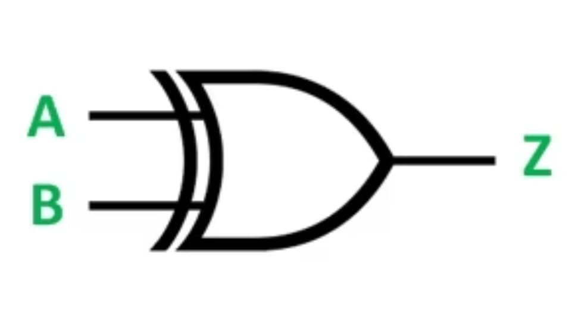
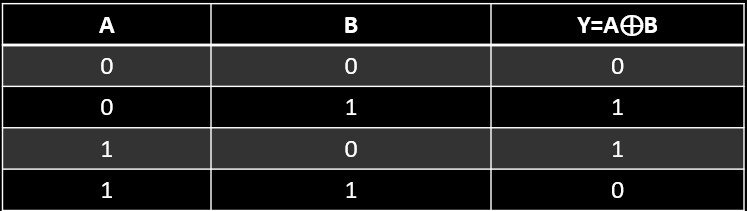

X-OR GATE
XOR gate is a hybrid logic gate that has 2 inputs that perform the Exclusive Disjunction operation. The XOR gate operation is similar to the OR gate's; few inputs vary. The output of the XOR gate is also called 'an odd function' because it gives '1' when an odd number of ones are present at the inputs.
Logic Diagram:
Truth Table:
